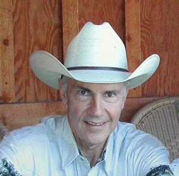
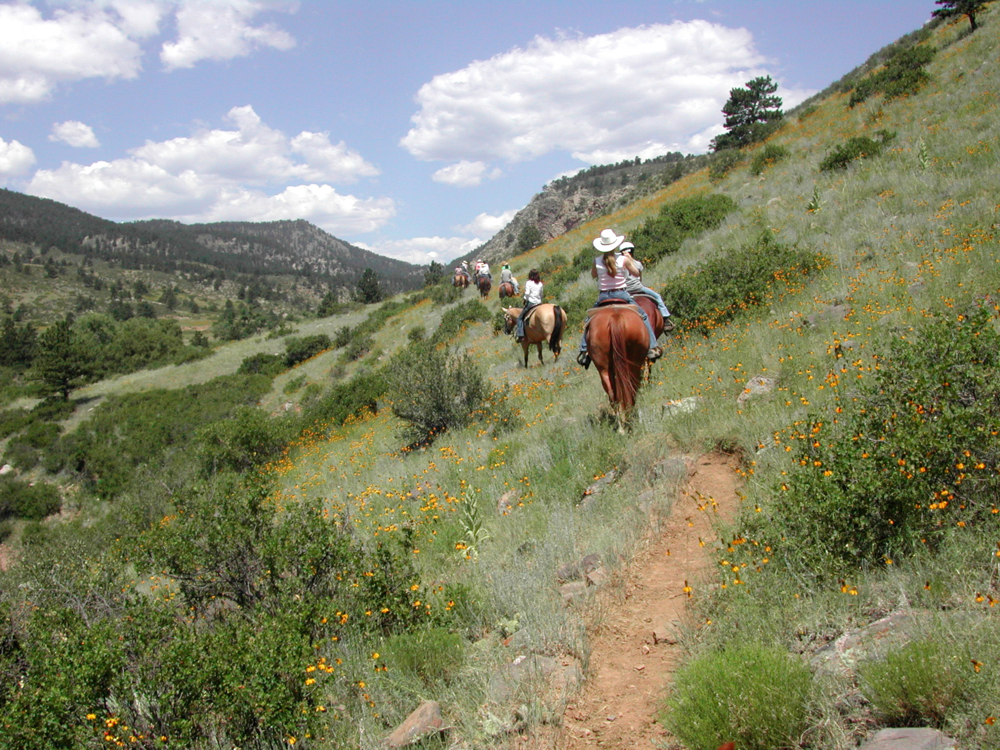
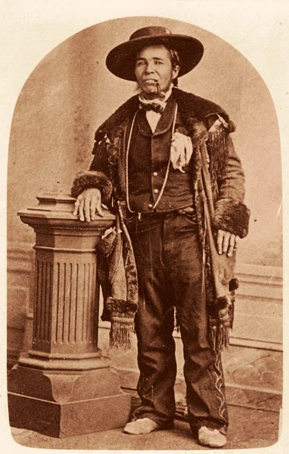
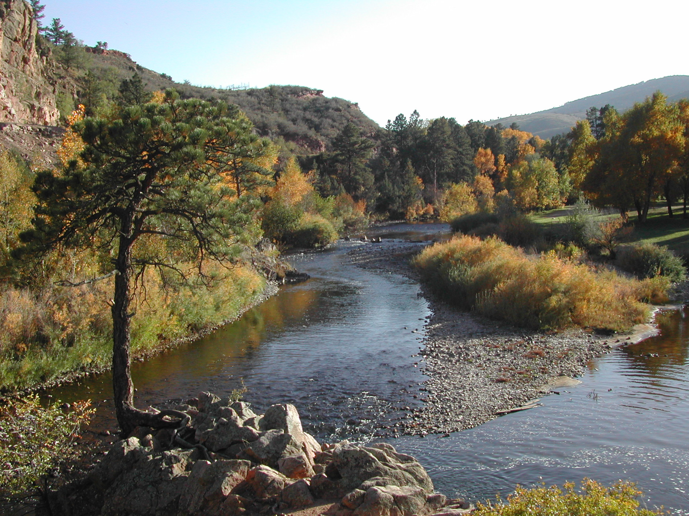

About David

David M. Jessup has always been fascinated with tales of the West — both the truth and the lore. A history buff who fills in history's holes with his own imagination, he's the author of the Mariano trilogy: Mariano's Crossing, Mariano's Choice, and Mariano's Woman — three novels that bring the real nineteenth-century figure Mariano Medina, and the world he moved through, back to life.
Jessup grew up on his family's ranch in Loveland, Colorado, at the foot of the Rocky Mountains' front range — land his family has called home for seventy-five years. It was here, among the stories of mountain men, Spanish settlers, and the Ute and other tribes who once crossed this same ground, that his lifelong pull toward the history of the American West took root.

Before he ever wrote a novel, Jessup lived a fair amount of history himself. He served with the Peace Corps in Peru, then worked for human rights in Latin America with the AFL-CIO's International Program in Washington, D.C. There he met Linda E. Jessup — now his wife of many decades, founder of the Parent Encouragement Program and co-author of Parenting with Courage and Uncommon Sense — and together they raised four children.
In 2000, Jessup returned to the family ranch, and it was there that the story of Mariano Medina — mountain man, friend of Kit Carson, and the man who rescued a stranded U.S. Army brigade crossing Colorado in the winter of 1857 — began to take hold of him. What started as curiosity about a real historical figure grew into a decade of research and writing, and eventually into three novels told from multiple points of view: Medina's, his Indian wife Takánsy's, and the young suitor John Alexander's.

Mariano's Crossing, his first novel, won first place for mainstream, character-driven fiction in the Rocky Mountain Fiction Writers Contest and was a finalist for the Colorado Book Award, the Pacific Northwest Writers Contest, and the Santa Fe Writers Project. Mariano's Woman was a finalist for the Colorado Author's League Book Award.

Jessup's deep attachment to the land that shaped his fiction has carried into a quieter, ongoing commitment to its stewardship — an interest in river restoration and conservation along the Big Thompson watershed that runs alongside his writing life, if rarely into the foreground of it.
Today, David and Linda divide their time between Colorado and Maryland, close to their children and grandchildren — and he's still telling stories about the American West. Some of them true.